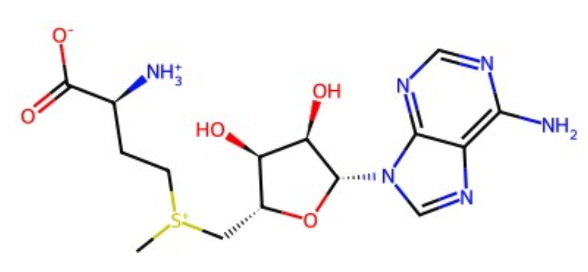
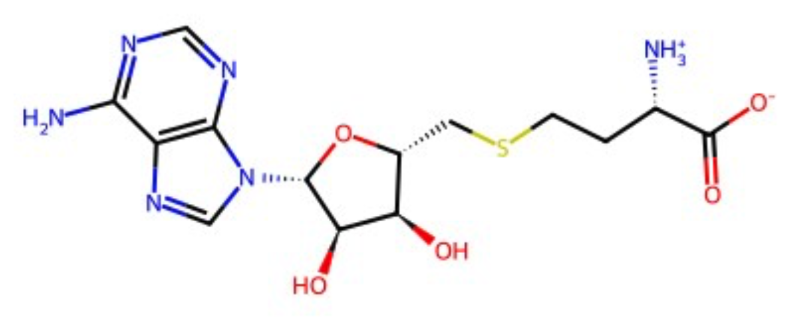

Abstract
Recent progress in AI for Science has been driven primarily by AI-ready scientific corpora derived from structured literature. However, extending these approaches to scientific data remains challenging due to task-dependent data requirements, fragmented and heterogeneous data sources, high structural and semantic complexity, and strong reliance on domain-specific knowledge. To address these challenges, we propose SciDataCopilot, a unified agentic framework grounded in the novel Scientific AI-Ready data paradigm. Scientific AI-Ready data paradigm extends conventional AI-ready practices by defining how scientific data are specified, structured, and composed to be directly usable by downstream scientific models and software. Specifically, the paradigm introduces task-conditioned data specification to map scientific instruction to required data schema and constraints, and emphasizes direct compatibility with downstream scientific utilization under explicit input constraints It further supports cross-modal and cross-disciplinary composition to enable consistent alignment across diverse domains. SciDataCopilot instantiates this paradigm through four coordinated agents for data access, intent parsing, data processing, and data integration. Extensive evaluations across life science, neuroscience, and earth science demonstrate substantial gains in efficiency, scalability, and consistency over manual pipelines. In particular, SciDataCopilot achieves over 30× efficiency gains for cross-disciplinary meteorological data preparation compared with hand-crafted effort.
Scientific AI-Ready Data Paradigm
- Scientific AI-Ready data paradigm adopts scientific tasks as the primary organizing principle, systematically translating scientific intent to required data units, variables, and constraints. As a result, This shifts data preparation from inefficient manual collection to automating workflow that can be reused across tasks.
- Scientific AI-Ready data paradigm prioritizes direct compatibility with downstream scientific models and software, ensuring that prepared data satisfy model-specific input constraints and enabling composable, executable workflows beyond standalone inference.
- Scientific AI-Ready data paradigm emphasizes principled cross-modal and cross-disciplinary alignment, enabling systematic data association, retrieval, alignment, and composition across heterogeneous scientific domains.
User Cases
Click to explore representative SciDataCopilot use cases.
Download all enzyme catalysis data, including enzyme sequences and substrate--product reaction information.
Overall
Basic dataset statistics.


Using the MNE fieldtrip_cmc MEG dataset, perform Spatio-Spectral Decomposition (SSD) by resampling the raw data to 250 Hz and cropping it to a 60-second window (50–110s). Fit the SSD estimator using OAS regularization and zero-phase FIR filters, defining the signal band at 9–12 Hz and the noise band at 8–13 Hz (both with 1 Hz transition bandwidths) to isolate alpha oscillations from 1/f background activity. Validate the results by inverting the spatial filters to plot patterns, transforming the data to source space, and comparing the Welch PSD of the maximum and minimum SNR components to verify oscillatory enhancement.
Plan
- Acquire the MNE fieldtrip_cmc raw MEG dataset, mark bad channels, and keep MEG planar gradiometers to avoid sensor-type scaling bias.
- Resample the continuous raw data to 250 Hz with anti-aliasing.
- Optionally apply artifact mitigation (SSP/ICA for EOG/ECG, SSS/Maxwell if available) and a 50/60 Hz notch.
- Define zero-phase FIR filters with 1 Hz transitions and adequate padding for 250 Hz.
- Set the SSD signal band to 9–12 Hz (zero-phase FIR, 1 Hz transitions).
- Define flank noise bands as 8–9 Hz and 12–13 Hz (separate zero-phase FIR filters).
- Apply signal + flank filters to continuous data before cropping, using adequate padding.
- Crop filtered datasets to the 60 s window (50–110 s) with identical spans and sensors.
- Compute signal-band covariance from 9–12 Hz data.
- Compute flank-band covariances and combine them into the noise covariance.
- Apply OAS regularization to both covariances.
- Solve the generalized eigenvalue problem to obtain filters W and SNR scores.
- Prepare broadband data (same sensors and window; optional 1–45 Hz bandpass).
- Compute broadband covariance C_data for interpretable patterns.
- Derive spatial patterns A = C_data × W and visualize top ranks.
- Project to SSD source space and compute Welch PSDs (≤ 0.5 Hz resolution).
- Compare max/min SNR components to confirm alpha enhancement.
- Quantify alpha SNR ratios and save filters, patterns, PSDs, and reports.
Analysis
- Loads the MNE fieldtrip_cmc dataset and keeps the CTF axial-gradiometer set (MNE uses meg="mag" for this sensor group).
- Resamples to 250 Hz, applies zero-phase notch at 50/100 Hz, and band-pass filters for SSD signal (9–12 Hz) and flanks (8–9, 12–13 Hz).
- Crops to 50–110 s, builds OAS-regularized covariances, and solves Cs w = λ Cn w for SSD filters and SNR scores.
- Computes patterns A = C_data W from broadband covariance, then projects source space and compares Welch PSDs.
- Saves figures and JSON report with metrics and topographies.
- SSD maximizes 9–12 Hz power relative to adjacent 8–9 and 12–13 Hz bands.
- Expected spectrum: pronounced 10–11 Hz peak for max-SNR, flat spectrum for min-SNR.
- Patterns A are intended for neurophysiological interpretation; spatial plausibility is a key check.
- Validation emphasizes rank-order consistency, alpha enhancement, and spatial plausibility.
- Channel picking uses pick_meg_grad with meg="mag".
- OAS is appropriate for covariance estimation.
- Zero-phase FIR prevents temporal shifts; flank concatenation is standard practice.
- Cholesky whitening and pattern scaling are acceptable.
- PSD settings are reasonable for ≤ 0.5 Hz resolution.
- Evaluate broader signal bands or time-window shifts.
- Test alternative pattern scaling.
- Consider beta-band CMC adjustments if needed.
The implementation meets the requirement; use the report and figures to confirm SSD characteristics.
Analyze and process polar datasets by merging and standardizing table headers, ensuring data consistency, and splitting the data into monthly segments for further scientific analysis.
Plan
Load and inspect data.
对数据进行合并整合，涉及变量: 月。
- Integrate processed results and export.
Analysis
- Ingest hourly records and parse timestamps for resampling.
- Standardize time fields and derive date/year-month keys.
- Aggregate hourly → daily values with variable-appropriate statistics.
- Partition by month and export to Excel.
- Datetime conversion and indexing for resampling.
- Daily aggregation from hourly records.
- Monthly slicing for organization and usability.
- Likely handling missing/duplicate timestamps and type normalization.
- Evidence: monthly outputs and improved quality scores.
- Check completeness: every calendar day present.
- Validate temporal consistency: monotonic timestamps, no gaps, consistent UTC.
- Add aggregation provenance and per-day coverage flags.
- Run targeted distributional QA/QC with monthly comparisons.
- Validate temporal continuity and timestamp consistency.
- Standardize metadata (station, units, processing history).
- Next steps: merge monthly files, compute derived indices, assess spatial coherence.
If you share the column schema, I can propose tailored aggregation and QC rules.
BibTeX
@article{scidatacopilot2026,
title={SciDataCopilot: Toward Scientific AI-Ready Data Preparation},
author={Scientific Data Team AT AI4S Center, Shanghai Artificial Intelligence Laboratory},
journal={ArXiv},
year={2026},
url={https://scidatacopilot.github.io/SciDataCopilot-project}
}